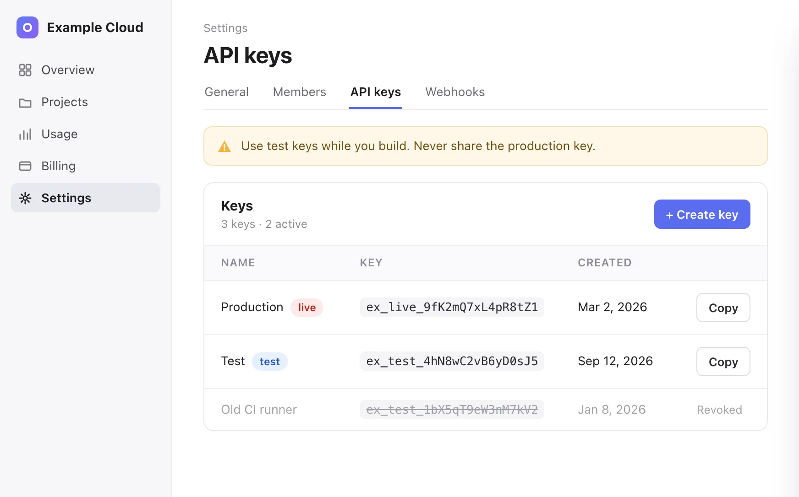
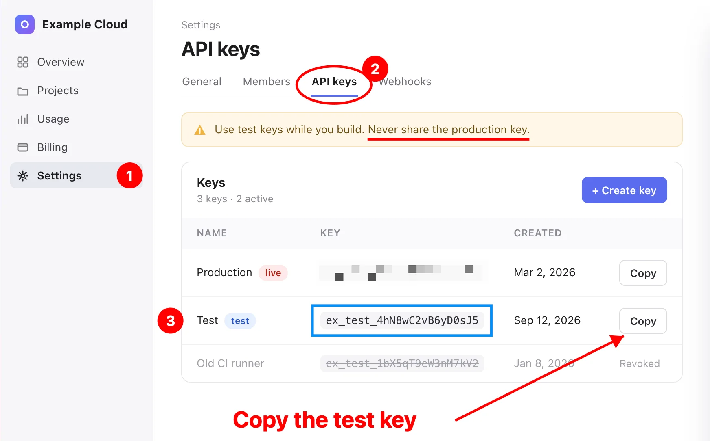

Arrow
Point at the thing. No modifier needed.
DragSkryn lives in your Mac's menu bar. Mark up a screenshot with arrows, boxes, blur, text and numbered steps, then copy, save or upload it in one keystroke.
Start here

No install needed
A browser replica of the annotation window, with the app's keys.
Each tool is marked up with itself. The key you hold as you start dragging picks the tool.
Point at the thing. No modifier needed.
DragUnderline a warning, cross something out.
⇧DragBox a button, a field, a row.
⌘DragCircle it. This one's blue: press C.
⇧⌘DragPixelates keys, emails and faces in blocks too big to read through.
⌃DragCrop. Only what's inside makes it into the image. Esc removes it.
⌥DragTyped at the cursor
Text. Enter or Esc finishes, ⇧⏎ adds a line, ⌘= and ⌘- resize. T over existing text edits it.
TA digit drops a numbered badge at the cursor. Two quick digits make one number: 3, 3 → 33.
1–0Color. Flips the mark under the cursor, or the color you draw next.
C2026-09-30 12:00:00 UTC
Capture time. Stamps when the screenshot was taken, in UTC. Above: when you opened this page.
UNothing is flattened until you send it. Hover a mark for its handles.
Three ways out, one keystroke each. Pick the modifiers in Settings. ⌘W closes without saving.
This is what gets pasted

Paste it straight into a chat, a ticket, a doc.
A PNG on your Desktop, or in any folder you choose.
Uploads to Uploadcare with your public key and copies the link. If the upload fails, the PNG is saved locally.
Screenshot and annotate, from the menu bar.
Your turn